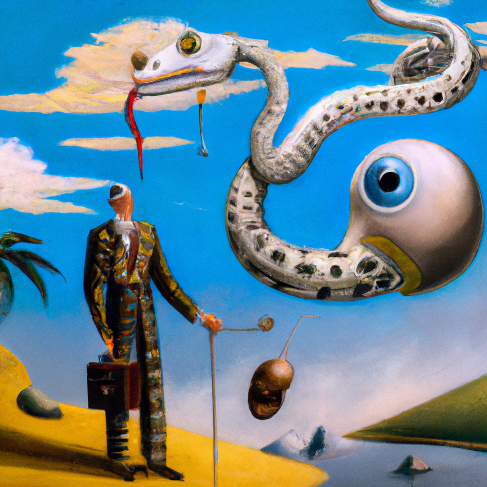

The future of AI and Python
Greetings, fellow coders!
It's no secret that artificial intelligence (AI) and Python have a close relationship. With the help of Python, AI has become more powerful and more accessible than ever before. But what does the future of AI and Python look like?
In this blog post, I'll be exploring the potential applications of AI and Python in the near future. I'll also give my thoughts on why Python is so important for the development of AI and how AI could shape the world in the future.
AI is an incredibly powerful tool that can be used to solve complex problems and automate tedious tasks. It has already been used to create virtual assistants, financial trading algorithms, and machine vision systems. As AI technology continues to advance, so do its applications.
Python is the perfect language for developing AI applications. It is easy to learn and understand, and it's open source and free. Python is also incredibly versatile, allowing developers to create highly sophisticated applications with relative ease.
In the near future, AI and Python could be used to develop autonomous vehicles, medical diagnosis tools, and smart homes. Autonomous vehicles could use AI to navigate safely and efficiently, while medical diagnosis tools could use AI to diagnose diseases quickly and accurately. AI and Python could also be used to create smart homes that are able to respond to the needs of their inhabitants.
AI could also be used to develop more efficient renewable energy sources and to create more efficient and effective healthcare systems. AI could be used to optimize energy production and distribution, as well as to develop treatments for diseases that are more effective and less expensive than traditional treatments.
AI and Python could also shape the world of education. AI could be used to create personalized learning experiences for students, helping them learn more quickly and effectively. AI and Python could also be used to create virtual classrooms, allowing students to learn from anywhere in the world.
The possibilities of AI and Python are virtually limitless. As these technologies continue to evolve, they will continue to shape the world in exciting and powerful ways. With the help of Python, AI will become more powerful and more accessible than ever before.